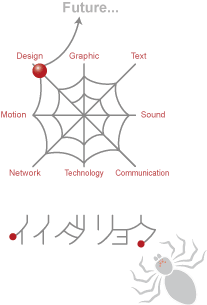

PORTFORIO
WEB
{kind=link}
{kind=link}
{kind=link}
{kind=link}
{kind=link}
PAPER
{kind=link}
{kind=link}
{kind=link}
{kind=link}
ILLUSTRATION
{kind=link}
{kind=link}
{kind=link}
{kind=link}
{kind=link}
{kind=link}
{kind=link}
MOTION / SOUND
{kind=link}
ABOUT
イイダリョウ
1976年生まれ。神奈川県在住。
丹沢山地と相模湾の自然に囲まれて暮らしています。
経歴: Web制作会社（営業）、印刷会社（DTPデザイン、Webディレクション）、フリーランス（Web・DTPデザイン）
広告代理店（Webデザイン、ディレクション）など
BLOG:
クモのようにコツコツと
SNS:
Facebook,
Twitter,
Instagram,
Pintarest,
Youtube,
SoundCloud,
QIITA,
CodePen
スキル
Web: HTML5, CSS3, JS, jQuery, Word Perss, PHP
Graphic: Illustrator, Photoshop
Editorial: Indesign, Excel, Powerpoint
Movie: iMovie
Sound: Grage Band
3D: Blender（?）
このサイトについて
HTML5, CSS3, jQueryで記述しています。PCはSafari, Chrome, Fire Fox, IE11で動作確認しています。
レスポンシブWebデザインにも対応しており、androidはChrome, iOSはSafariで動作確認しています。
ロゴマーク
Design, Graphic, Text, Motion, Sound, Network, Technology, Comunication...
この８本の土台を横糸で、クモの巣のように繋ぎながら“成長し続ける自分”をイメージしています。
「web」には「クモの巣」という意味があります。クモは８つの目と８本の足を持っています。
「８」は「末広がり（八）」「無限（∞）」に通じる縁起の良い数字です。
節足動物の中ではマイノリティーに属し、「益虫（神の使い）」とも「害虫（物の怪）」とも言われるクモ。
常に“多様な視点”を持っていたい、という願いも込めています。
森羅万象あらゆる方向に網を張り、その中から皆様の目的に対し最適なデザインを追求します。

CONTACT
ご意見・ご感想は、こちらのフォームよりお送りください。（*は必須項目です）